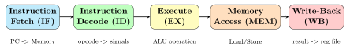

Chapter 4: Processor Cores¶
A processor core is the engine of a System-on-Chip. It fetches instructions from memory, decodes them, executes them, and writes results back. This chapter explains processor architecture from scratch, then presents the open-source cores available in the ip-library/processors/ directory.
4.1 How a Processor Works — The Fetch-Decode-Execute Cycle¶
Every processor, from the simplest microcontroller to Apple’s M3, repeats the same basic loop every clock cycle:

- Fetch (IF)
- The Program Counter (PC) register holds the address of the next instruction. The processor reads that address from instruction memory and increments PC by 4 (for 32-bit instructions).
- Decode (ID)
- The 32-bit instruction encoding is broken down into fields: opcode (what to do), source registers (rs1, rs2), destination register (rd), and immediate values.
- Execute (EX)
- The Arithmetic Logic Unit (ALU) performs the actual computation: add, subtract, compare, shift, AND, OR, etc.
- Memory (MEM)
- Load instructions read data from RAM; store instructions write data to RAM. Jump/branch instructions check a condition and may redirect the PC.
- Write-Back (WB)
- The result is written into the destination register in the register file.
4.2 RISC-V — The Open Instruction Set¶
RISC-V (pronounced “risk five”) is an open, free instruction set architecture (ISA) developed at UC Berkeley. Unlike ARM or x86, which are proprietary, anyone can implement a RISC-V processor without paying royalties. This has made it the dominant ISA in open-source chip design.
4.2.1 ISA Extensions¶
RISC-V is modular. The base ISA is called RV32I (32-bit, integer only). You add letters to enable optional extensions:
| Letter | Extension | What it adds |
|---|---|---|
| I | Integer base | 47 integer instructions (add, sub, load, store, branch) |
| M | Multiply/Divide | MUL, MULH, DIV, REM instructions |
| A | Atomics | Atomic read-modify-write (for multi-core locks) |
| F | Float (single) | 32-bit IEEE 754 floating-point |
| D | Double float | 64-bit IEEE 754 floating-point |
| C | Compressed | 16-bit instructions (save code size by \(\sim\)25%) |
Example: The CV32E40P core in this project implements RV32IMCFZicsr_Zifencei — 32-bit integer, multiply, compressed, single-precision float, plus two privilege-level extensions.
4.2.2 Register File¶
RISC-V has 32 general-purpose registers named x0–x31, each 32 bits wide (for RV32). Register x0 is hardwired to zero — reading it always returns 0, writing it does nothing. This is a deliberate design simplification that eliminates special-case instructions.
| Register | ABI Name | Conventional Use |
|---|---|---|
| x0 | zero | Always 0 (hardwired) |
| x1 | ra | Return address |
| x2 | sp | Stack pointer |
| x5–x7, x28–x31 | t0–t6 | Temporaries (caller-saved) |
| x8–x9, x18–x27 | s0–s11 | Saved registers (callee-saved) |
| x10–x17 | a0–a7 | Function arguments / return values |
4.2.3 Instruction Encoding¶
Every RISC-V instruction is exactly 32 bits (or 16 bits with the C extension). There are six instruction formats:
4.3 The Hand-Written RV32I Core¶
The file rtl-templates/riscv-cores/rv32i_core.sv is a complete, working single-cycle RV32I processor written from scratch in \(\sim\)300 lines of SystemVerilog. Let’s walk through its key sections.
4.3.1 Fetch Stage¶
// Program Counter register
logic [31:0] pc;
// Combinational: next PC is either PC+4 or a branch target
logic [31:0] pc_next;
assign pc_next = branch_taken ? branch_target : pc + 32'd4;
// Sequential: update PC on every clock
always_ff @(posedge clk or negedge rst_n) begin
if (!rst_n)
pc <= RESET_ADDR; // CPU starts executing from here
else
pc <= pc_next;
end
// Instruction memory read --- single-cycle (combinational)
assign instr = imem[pc[IMEM_AW+1:2]]; // Word-addressed
4.3.2 Decode Stage¶
// Unpack the 32-bit instruction into fields
logic [6:0] opcode;
logic [4:0] rs1, rs2, rd;
logic [2:0] funct3;
logic [6:0] funct7;
logic [31:0] imm_i, imm_s, imm_b; // Sign-extended immediates
assign opcode = instr[6:0];
assign rd = instr[11:7];
assign funct3 = instr[14:12];
assign rs1 = instr[19:15];
assign rs2 = instr[24:20];
assign funct7 = instr[31:25];
// I-type immediate: sign-extend bits [31:20]
assign imm_i = {{20{instr[31]}}, instr[31:20]};
// B-type immediate: scrambled bit order by design (improves routing)
assign imm_b = {{19{instr[31]}}, instr[31], instr[7],
instr[30:25], instr[11:8], 1'b0};
4.3.3 ALU¶
logic [31:0] alu_a, alu_b, alu_result;
logic [3:0] alu_op; // Decoded from opcode + funct3 + funct7
always_comb begin
case (alu_op)
ALU_ADD: alu_result = alu_a + alu_b;
ALU_SUB: alu_result = alu_a - alu_b;
ALU_AND: alu_result = alu_a & alu_b;
ALU_OR: alu_result = alu_a | alu_b;
ALU_XOR: alu_result = alu_a ^ alu_b;
ALU_SLL: alu_result = alu_a << alu_b[4:0]; // Shift left logical
ALU_SRL: alu_result = alu_a >> alu_b[4:0]; // Shift right logical
ALU_SRA: alu_result = $signed(alu_a) >>> alu_b[4:0]; // Arithmetic shift
ALU_SLT: alu_result = ($signed(alu_a) < $signed(alu_b)) ? 32'd1 : 32'd0;
ALU_SLTU: alu_result = (alu_a < alu_b) ? 32'd1 : 32'd0;
default: alu_result = 32'd0;
endcase
end
4.4 Open-Source Cores Available in This Project¶
| Core | ISA | Pipeline | Area (kGE) | Best For |
|---|---|---|---|---|
| SERV | RV32I | Bit-serial | \(<\)2 | Ultra-tiny MCU |
| PicoRV32 | RV32IMC | Single-cycle | 3–5 | Simple embedded |
| Ibex | RV32IMC | 2-stage | 12–20 | IoT, security |
| CV32E40P | RV32IMCF | 4-stage | 30–40 | OpenHW Group SoC |
| CVA6 (Ariane) | RV64GC | 6-stage OoO | 100+ | Linux-capable |
| BOOM | RV64GC | Superscalar OoO | 200+ | High-perf research |
| Rocket | RV64GC | 5-stage | 150+ | SiFive FE310 basis |
| Cortex-M0 DS | ARMv6-M | 3-stage | 12 | ARM ecosystem |
| ao486 | x86 (486) | 5-stage | 50–80 | DOS compatibility |
4.4.1 Choosing the Right Core¶
Decision Guide: Which Core to Use?
- Smallest footprint on Artix-7
- \(\to\) SERV or PicoRV32
- Standard MCU peripheral SoC
- \(\to\) CV32E40P or Ibex
- Run Linux
- \(\to\) CVA6 (Ariane) on ZCU102 or KCU106
- ARM software ecosystem
- \(\to\) Cortex-M0 DesignStart
- ASIC tapeout on Sky130
- \(\to\) PicoRV32 or Ibex (proven)
- Research / benchmarking
- \(\to\) BOOM or Rocket via Chipyard
4.5 PicoRV32 — The Arty A7 Workhorse¶
PicoRV32 (ip-library/processors/riscv/picorv32.core) is the recommended starting point for FPGA projects on the Arty A7 or KCU102. It is small, well-tested, and has a native AXI4-Lite master interface.
The wrapper file rtl-templates/riscv-cores/picorv32_wrapper.sv bridges the native PicoRV32 memory interface to AXI4-Lite:
// PicoRV32 native signals
logic mem_valid; // CPU wants a memory access
logic mem_ready; // Memory responds
logic [31:0] mem_addr; // Address
logic [31:0] mem_wdata; // Write data
logic [3:0] mem_wstrb; // Byte enables (0000 = read)
logic [31:0] mem_rdata; // Read data back to CPU
// Bridge FSM: converts PicoRV32 native -> AXI4-Lite channels
typedef enum logic [1:0] { BR_IDLE, BR_WRITE, BR_READ } br_state_t;
br_state_t br_state;
always_ff @(posedge clk or negedge rst_n) begin
if (!rst_n) begin
br_state <= BR_IDLE;
mem_ready <= 1'b0;
end else begin
mem_ready <= 1'b0;
case (br_state)
BR_IDLE: if (mem_valid) begin
if (|mem_wstrb) begin // Write if any strobe set
m_axi_awaddr <= mem_addr;
m_axi_awvalid <= 1'b1;
m_axi_wdata <= mem_wdata;
m_axi_wstrb <= mem_wstrb;
m_axi_wvalid <= 1'b1;
br_state <= BR_WRITE;
end else begin // Otherwise read
m_axi_araddr <= mem_addr;
m_axi_arvalid <= 1'b1;
br_state <= BR_READ;
end
end
// ... (write/read completion states)
endcase
end
end
4.6 ARM Cortex-M0 DesignStart¶
For projects that need the ARM Thumb instruction set and the vast ARM software ecosystem (Keil, GNU Arm Embedded Toolchain, CMSIS), the Cortex-M0 DesignStart is the recommended choice.
The wrapper ip-library/processors/arm/cm0_ahblite_wrapper.sv converts the Cortex-M0’s AHB-Lite bus to AXI4-Lite:
Note: Cortex-M0 Requires ARM Licence
The actual Cortex-M0 RTL must be obtained from ARM’s DesignStart portal (free registration required). The wrapper and .core file in this project provide the integration glue; you supply the ARM RTL. The ao486 x86 core is fully open-source (no licence required).
4.7 Building a Minimal RV32I SoC¶
The pipeline/templates/soc_spec_template.yaml file describes how to assemble a complete SoC from these components:
name: my_riscv_soc
cpu:
type: picorv32
isa: RV32IMC
memory_map:
- { name: boot_rom, base: 0x00000000, size: 0x10000, type: rom }
- { name: sram, base: 0x20000000, size: 0x40000, type: sram }
- { name: uart0, base: 0x40000000, size: 0x1000, ip: uart_16550 }
bus:
type: axi4_lite_crossbar
target:
board: arty_a7_35t
The Python automation script (pipeline/automation/ip_pipeline.py) reads this YAML and generates all the interconnect glue logic, constraint files, and build scripts automatically.
4.8 Summary¶
-
Every processor runs a Fetch -> Decode -> Execute -> Memory -> Write-Back cycle.
-
RISC-V is the open, royalty-free ISA used in most open-source chip designs.
-
The project provides cores from ultra-tiny (SERV, \(<\)2kGE) to high-performance (CVA6, Linux-capable).
-
The hand-written
rv32i_core.svis a teaching tool; for real projects use PicoRV32, CV32E40P, or Ibex. -
Cores connect to peripherals through bus protocols — the topic of the next chapter.